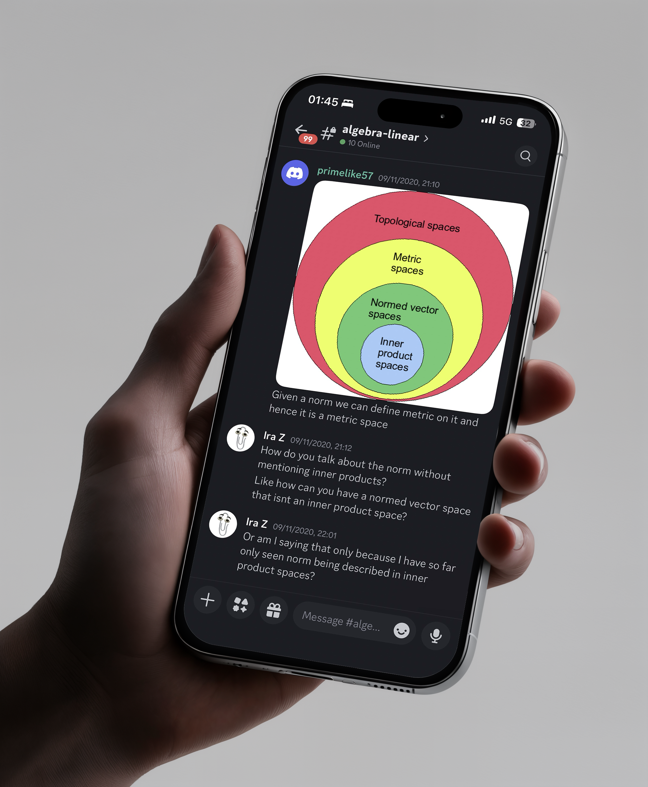

One principal motive of CMIT has always been to discuss about mathematics and help each other in the community. After the success of our first web-based discussion portal in 2020, we moved over to CMIT's own Discord server. The server has wonderful functionality alongside LaTeX support, dedicated reading groups, and various discussion channels.
The CMIT Discord server is a place to discuss mathematics, solve problems, share information and participate in math related events at CMIT and elsewhere. Most importantly, it is a place to enjoy doing math together. Currently the Discord server is only open to members of IISER Thiruvanathapuram. If you a student/faculty, drop us an email to recieve an invite link.
